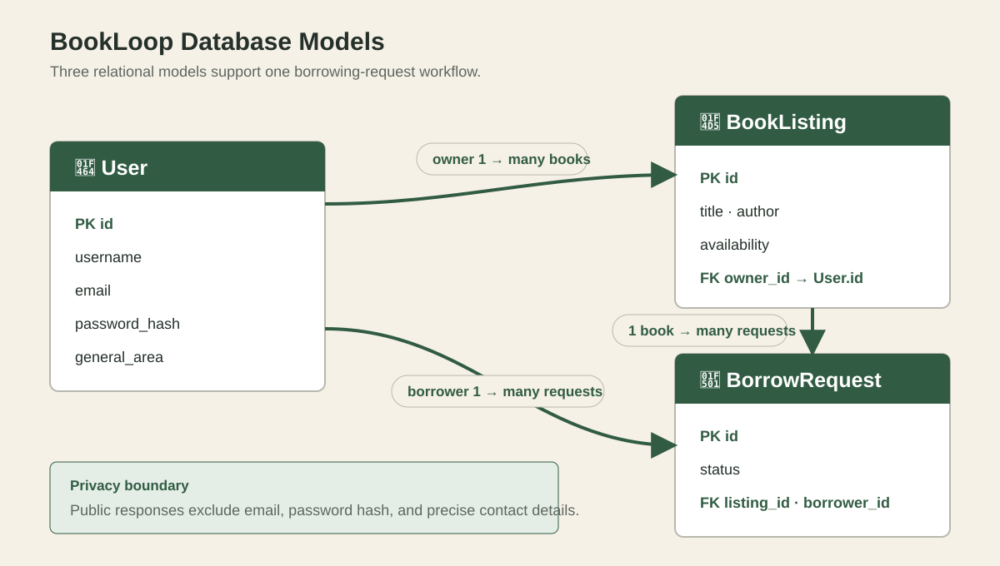

배달 1
사용자, 프라이버시 문제, 데이터 모델, API 계약, 인터페이스 방향을 정의했습니다.
582-32W-VA · 🗄️ 배달 2
개인정보를 보호하며 데이터베이스에 저장되는 도서 대여 요청 흐름.
백엔드와 데이터베이스 · MVP v0.2 · 2026년 8월 · Tony Yu
01 · D1 → D2
사용자, 프라이버시 문제, 데이터 모델, API 계약, 인터페이스 방향을 정의했습니다.
Flask 백엔드를 실행하고, 데이터를 검증하고, 관계형 레코드를 저장하며, 요청 접근을 보호합니다.
프로젝트 진행 흐름
아키텍처 미리보기 · 자세한 내용은 05
로드맵에 반영한 선생님 피드백
02 · 애플리케이션, 환경, 데이터베이스 설정
최종 Flask 실행 명령과 성공한 터미널 출력을 추가합니다.
[명령 및 스크린샷 준비 중]
문서화된 환경 변수, 안전한 기본값, 비밀정보 경계를 보여줍니다.
[환경 설정 근거 준비 중]
SQLite 생성 방법과 예상 테이블 확인 방법을 보여줍니다.
[데이터베이스 생성 근거 준비 중]
이번 주 실험실 작업에서 점선 카드를 검증된 명령과 근거로 교체합니다.
03 · 재현 가능한 데모 시작 데이터
시드된 대여 요청자 계정
시드된 도서 등록 소유자
시드된 무관한 테스트 사용자
시드된 대여 가능한 BookListing
사용자들과 대여 가능한 도서 하나로 재현 가능한 시작 상태를 만듭니다.
대여 요청자가 실제 🐍 Jinja 폼에서 직접 생성해야 검증, 영속성, 갱신된 화면이 진짜 근거가 됩니다.
검증된 Python/Flask 명령, 간결한 출력, 두 번째 실행에서 중복이 생기지 않는 근거로 교체합니다.
[시드 명령 및 근거 준비 중]
시드 명령은 계획되었지만 아직 구현 전입니다. 수동 Raw SQL 입력은 발표 워크플로가 아닙니다.
04 · 선택한 수직 슬라이스
대여 요청 흐름
| 사용자 / Jinja | Flask | SQLite |
|---|---|---|
| Tony 로그인 | Tony 인증 | Tony 조회 |
| Tony가 Mina의 Almond 요청 | 요청자와 도서 검증 | BorrowRequest 삽입 |
| Tony가 결과 열기 | Tony에게 허용된 요청 읽기 | 저장된 행 조회 |
Tony에게 Pending 표시 | 응답 반환 | 영속 데이터 |
생성/조회 API, 데이터베이스 모델, 검증, 프라이버시 안전 직렬화, 접근 권한 테스트.
실제 브라우저 로그인, 공통 서비스 추출, 🐍 Python/Jinja 요청 화면.
05 · 데이터 흐름도와 검증 경계
제품 화면 연결 준비 중.
D2 백엔드 관문 통과 후 진행할 계획입니다.
↘ 두 클라이언트 경로가 같은 규칙으로 합쳐집니다 ↙
HTTP 입력을 받고 응답 형식을 선택합니다.
검증, 접근 권한 조정, 생성/조회 규칙을 담당합니다.
관계를 정의하고 유효한 애플리케이션 데이터를 영속화합니다.
현재 검증은 SQLAlchemy가 유효한 데이터를 커밋하기 전에 Flask API 라우트에서 실행됩니다.
서비스 추출 후 정확한 검증 및 접근 권한 호출 경로로 이 카드를 교체합니다.
주황색 단계는 연결 예정 작업이며 최종 발표 전에 반드시 검증해야 합니다.
06 · 관계형 데이터베이스

07 · 계획된 라이브 제품 데모
라이브 데모 클릭 경로
BookLoop
👤 User 세션
Tony로 로그인됨
대여 가능 · Montreal
동작 · 새 BorrowRequest 생성
상태: pending
요청이 성공적으로 저장되었습니다.
계획된 화면 — 브라우저 구현 및 검증 준비 중
같은 BorrowRequest #3에 대한 데이터베이스 근거
폼 제출 → 새 BorrowRequest #3 생성.
같은 Request #3 열기 → 상태 Pending 표시.
새로고침 또는 재시작 → Request #3가 여전히 존재.
08 · 검증 및 접근 권한 경계
👤 Tony
대여 요청자
200 · 허용
👤 Mina
Almond 소유자
200 · 허용
👤 Alex
무관한 사용자
403 · 금지
🚪 Guest
로그아웃 상태
401 · 로그인 필요
| 사용자 | 요청 | 결과 | 이유 |
|---|---|---|---|
| Tony | GET /api/requests/3 | 200 | Tony가 Request #3을 생성했습니다. |
| Mina | GET /api/requests/3 | 200 | Mina가 Almond 도서를 소유합니다. |
| Tony | GET /api/requests/999 | 404 | Request #999가 존재하지 않습니다. |
| Alex | GET /api/requests/3 | 403 | Alex는 요청자도 소유자도 아닙니다. |
| Guest | GET /api/requests/3 | 401 | 인증된 세션이 없습니다. |
Tony가 Almond에 잘못되거나 중복된 요청을 제출 → 서버 메시지를 표시하고 추가 BorrowRequest가 저장되지 않았음을 증명합니다.
09 · 검증 및 Git 근거
최종 집중 테스트와 전체 스위트 결과를 삽입합니다.
의미 있는 D2 커밋의 짧은 흐름을 삽입합니다.
최종 설치, 데이터베이스, 실행 명령을 삽입합니다.
10 · 이 아키텍처가 남은 작업을 지원하는 방법
🔐 로그인, ✅ 검증, 🧩 서비스, 🗄️ 트랜잭션, 테스트 패턴을 재사용합니다.
같은 모듈을 재사용하고 유효한 상태 전환 규칙을 추가합니다.
백엔드 규칙을 다시 만들지 않고 검증된 📤 JSON API를 사용합니다.
인증, 검증, 영속성, 프라이버시 안전 응답을 재사용합니다.
역할로 보호된 검토 작업을 추가하며, 비공개 데이터에 대한 무제한 접근은 허용하지 않습니다.
이후 CRUD는 쉬워지지만 소유권, 삭제 기록, 역할, 상태 전환에는 각각의 규칙이 여전히 필요합니다.
11 · 다음 체크포인트
🟨 React는 같은 JSON API를 호출하고 검증된 모델, 상태코드, 검증 규칙, 테스트 케이스를 재사용합니다.
프라이버시 피드백 로드맵